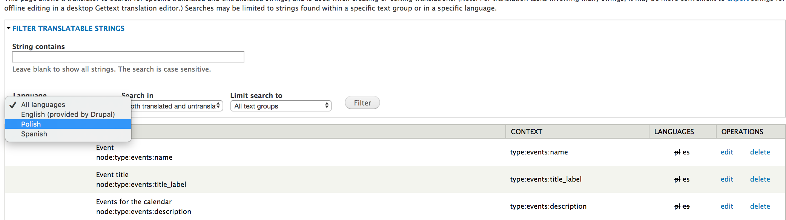
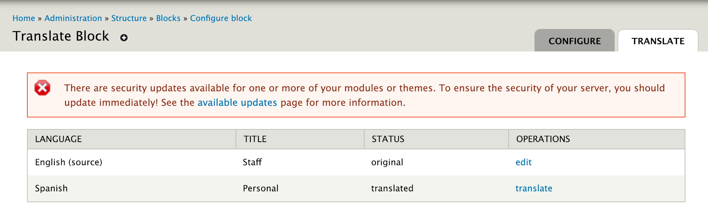

Translating interface components¶
What is Interface Translation?¶
Interface includes pretty much everything that is not content (of any type) and includes:
- Blocks
- Menus
- Taxonomy terms
- System interface (including translatable strings contained in code)
- Views
- Custom code (including strings in custom modules and our theme
How is it Translated?¶
Interface text can be translated in a few different ways:
- By translating directly in the translate page under Configuration/ Translate Interface/ Translate (https://www.illinoislegalaid.org/admin/config/regional/translate/translate)
- For blocks, menus, and taxonomy terms, by translating in-line
- By exporting or extracting strings to a PO file, translating offline and re-importing
Single Strings Through the UI¶
Go to Configuration and then Translate interface.
Then click on the translate tab:
You can filter on language, whether the string has already been translated, and text groups.
Filtering on the string is case sensitive. Please, please, PLEASE are all considered different words.
Blocks¶
This applies to blocks that are created in the UI. Some blocks are views and some are custom and must be managed via the custom modules and PO edit sections.
Start by accessing the list of blocks (or mouse over the block you want to edit and click on the little gear and select “Translate”

Select “Configure” next to the block. If you don’t see a block title and body block, you can not manage the translation this way.
Click on the translate tab
Next to the language select “Add translation” or “Edit” (if a translation exists):

Enter or update the translation and save.
Custom modules & ILAO themes¶
Extract files¶
These need to be extracted and edited in POEdit and then imported.
Go to the Translate interface section and click on the “Extract” tab
Extract what you want to translate:
- Custom modules are in sites/all/modules/custom
- Theme (templates) are in sites/all/themes/ilao_foundation

You want to
- Select template file for [x] translations
- Include existing translations
Import files¶
Theme and module importa are part of the “Built-in interface” text group. To import: Go to the Translate interface section and click on the “Import” tab
- Add the language file
- Pick the language to import into
- Leave the built-in interface checked
- Set the mode to “Strings in the uploaded file replace existing strings, new ones are added. The plural format is updated.
Working with PO files & POEdit¶
When you extract or export a file, it will generate a .po file. Open that in PoEdit and add or update the existing translations.
Once you are done, import the file (see Import files under custom modules & ILAO themes